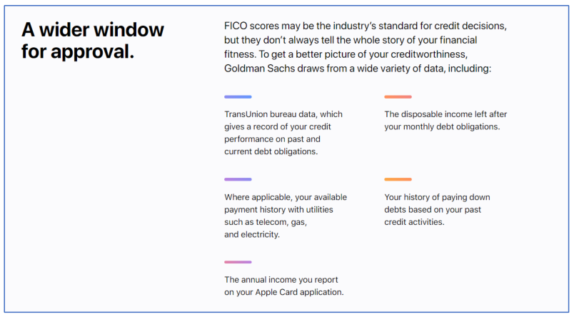

New York cleared the Apple Card of bias without proving it fair
In 2019 David Heinemeier Hansson shared every bank account with his wife and was offered twenty times her Apple Card limit, and Goldman Sachs insisted its model never knew which of them was a woman.
Why this matters
Every day, models you cannot see decide whether you get a loan, an apartment, or an interview. When one of those decisions looks biased, how would you prove it? In 2019 the Apple Card became the most public test of that question, and a state regulator spent sixteen months answering it. This lesson follows what happened, what the regulator found and did not find, and why an algorithm can produce a lopsided outcome without ever using the trait it seems to punish. By the end you will know why "no bias found" and "proven fair" are different sentences, and why the person best placed to complain is the one who cannot get the evidence.
- 01
- The COMPAS recidivism scores: how two careful parties measured different definitions of fairness off the same numbers and both were right.
- 02
- Patrick McKenzie, "How credit cards make money": how card underwriting and card economics actually work, from the inside.
A shared account and a twenty-to-one split
On November 7, 2019, the software developer David Heinemeier Hansson posted that Apple Card had offered him a credit limit twenty times his wife's. They filed joint tax returns, lived in a community-property state, and had been married for years. New York's Department of Financial Services, the regulator that later investigated, recorded the same twenty-to-one gap and the same date in its report.1
His wife, Jamie Heinemeier Hansson, published her own account four days later. Her credit score was higher than his, she wrote, her United States credit history longer, with no late payments, and she was independently wealthy. She was given no explanation and no way to make her case; a customer-service representative told her the outcome was "just the algorithm." An Apple Card manager, aware of the tweets, raised her limit to match her husband's, in her telling without any real explanation.2
-
Nov 7, 2019
Hansson posts the screenshot1
His complaint spreads within hours, calling the card's underwriting a black box he had no way to appeal.
-
Nov 10, 2019
Steve Wozniak reports the same3
The Apple co-founder said the card gave him ten times the limit of his wife, Janet Hill, though the couple shared every account and asset.
-
Nov 11, 2019
Goldman Sachs denies deciding on gender4
The card's issuer said two family members can receive different terms on individual credit factors, and that it does not make decisions on gender.
-
Late 2019
New York opens an investigation1
The Department of Financial Services began examining whether Goldman Sachs unlawfully discriminated against women in Apple Card underwriting.
Cleared on bias, faulted on secrecy
The Department of Financial Services took sixteen months. It reviewed several thousand pages of records from the Bank and Apple, interviewed witnesses and the applicants who complained, and had its Consumer Examinations Unit run a regression analysis on the underwriting data for nearly 400,000 New York applicants, from the card's launch through the first complaints.1 In its own summary, the investigation "did not produce evidence of unlawful discrimination against applicants under fair lending law."5
The finding had two parts, and both are in the report. Women and men with equivalent credit characteristics had similar Apple Card outcomes, and the model did not use gender or marital status as an input.1 For every individual who complained, the Bank pointed to lawful factors behind the decision: credit score, total debt, income, how much of their available credit they were using, missed payments, and other credit history.1
Two people who shared every account received credit limits that differed twenty to one. The regulator that examined the model found no violation of fair-lending law, and found the model was never told which applicant was a woman.1
What the report faulted was not the model but the silence around it. Federal law requires a lender to explain a denial, not the terms it grants, so an approved applicant with a puzzling limit is owed no reason at all.1 Apple Card's appeal process made an applicant wait six months. Goldman Sachs raised both complaining wives' limits within days of the tweets and dropped the six-month wait. In June 2020 it introduced a program, "Path to Apple Card," to coach declined applicants toward approval.1 The regulator's own word for the underwriting was "black box."1
How a model discriminates without knowing gender
Goldman's defense and the regulator's finding rest on the same fact: gender was not an input. To see why that does not close the question, start with the law. The Equal Credit Opportunity Act, in force since 1974, makes it unlawful to discriminate in any part of a credit transaction on the basis of sex or marital status, among other traits.6 The law reaches two different wrongs. One is disparate treatment: using a prohibited trait, or deciding with it in mind. The other is disparate impact: a rule that names no prohibited trait yet falls unequally on a protected group. "The model does not use gender" answers the first charge. It does not touch the second.
A proxy is an input that carries a protected trait without naming it. A model can be blind to gender and still act on it, if something it does read, such as a spending pattern, a type of account, or a gap in credit history, tends to travel with gender. Remove the label and the shadow it cast stays in the data.
Goldman Sachs published the categories of data its model draws on. None of them is gender. The list below is what the website shows, not the model itself.

Each item is a plausible measure of whether someone repays debt. Each can also carry the history of who has been allowed to borrow. Credit-report data reflects who has held credit in their own name, which for decades women could not do as freely as men; utility and payment records reflect where people live and what they can afford. The critic Liz O'Sullivan, writing in TechCrunch, notes that features like these are known to act as stand-ins for protected classes, and that the differences on two applicants' credit files "do not necessarily translate to true financial responsibility or creditworthiness."7 A model built only from such inputs can reproduce an old pattern without ever seeing the trait that produced it.
This is why "no violation" is a narrower finding than it sounds. Whether an outcome counts as biased depends on which definition of fairness you hold, and, as an earlier lesson on the COMPAS recidivism scores showed, two careful parties can measure different definitions off the same numbers and both be right.
The proof an applicant can never reach
The regulator tested for disparate impact the way such tests are usually run: it compared women and men with similar credit characteristics and found their outcomes similar.1 That method has a blind spot, and it is the center of this case. If a proxy for gender sits inside "credit characteristics," then holding those characteristics equal holds the proxy equal too, and its effect disappears from view. Comparing like with like cannot find a bias that lives in the likeness.
O'Sullivan makes exactly this objection. She calls the comparison a 1970s-era test and points out that the public report never says whether Goldman's inputs were examined for proxy effects at all.7 The report states that its regression did not bear out a violation, but it publishes no table, no specification, and no proxy analysis of the nearly 400,000-applicant study.1 The central number in the case is one the public is asked to take on trust.
What would settle it? To know whether a proxy drove the gap, you would need three things: the list of features the model actually uses, the specification of the regression the Department ran, and a mediation analysis testing those features against applicants' real gender. None of the three is public. An individual applicant can reach none of it. She never sees the model. She cannot assemble the demographic data of 400,000 strangers. And the law entitles her to a reason only when she is denied, not when she is approved on terms she cannot explain.1 The person with standing to complain is the one person structurally unable to gather the proof.
The Department said as much. Its finding of no violation, it wrote, "does not prove otherwise" about inequality built into credit data, and it called the law governing credit scoring in need of strengthening and modernization.1 "No violation found" is an honest verdict. "Proven fair" is a different claim, and the record does not support it.
Where the black box sits today
The gap the Apple Card exposed was not mainly about one card. It was that the person affected by an automated credit decision cannot see the model that made it, and often is owed no reason for it. That gap is wider now, because more decisions run this way, and regulators have begun to answer it directly.
In May 2022 the Consumer Financial Protection Bureau issued a circular addressing lenders that use complex, "black-box" machine-learning models. Such models, it held, earn no exemption from the requirement to give an applicant the specific and accurate reasons for an adverse decision. A creditor cannot justify noncompliance "based on the mere fact that the technology it employs to evaluate applications is too complicated or opaque to understand."8 Not understanding your own model is not a defense.
That rule closes part of the gap and leaves the rest open. It forces a lender to state its reasons, which Apple Card applicants never got. It does not hand anyone the model, the data, or the means to test a stated reason for a proxy hiding underneath it. The same opacity now sits inside the systems that price insurance, screen tenants, and rank job applicants. The Apple Card investigation shows how far a careful outsider gets before the door closes: no violation proven, and none disproven.
The takeaway
You can now recount the case. A shared-finances couple drew credit limits twenty to one apart. The accusation went viral, and a sixteen-month investigation found no fair-lending violation and no gender in the model, alongside real failures to explain a limit or appeal it. The reason the story does not end there is the proxy: a model blind to a trait can still act on it through the data that trait left behind, and testing only applicants who already look alike cannot catch it. "No violation found" is what the evidence supported. "Proven fair" would have needed the model, the data, and the analysis, and no applicant or member of the public can get any of them. When a decision about you runs inside a box you cannot open, its fairness is not something you or the public can check, and the law is only beginning to reach that.
- 01
- NY DFS, Report on the Apple Card Investigation: the full record, including the transparency findings this lesson only sampled.
- 02
- CFPB Circular 2022-03: the regulator's current position that a black-box model is no excuse for withholding an applicant's reasons.
Sources
- NY Department of Financial Services · Report on the Apple Card Investigation (March 2021)
- Jamie Heinemeier Hansson · About the Apple Card (Nov 11, 2019)
- Futurism · Steve Wozniak Says Apple Card Discriminated Against His Wife
- AppleInsider · Goldman Sachs denies claims of Apple Card gender bias
- NY Department of Financial Services · Press release on the Apple Card investigation (March 23, 2021)
- Equal Credit Opportunity Act, 15 U.S.C. § 1691 (Legal Information Institute)
- TechCrunch · Liz O'Sullivan, How the law got it wrong with Apple Card (Aug 2021)
- Consumer Financial Protection Bureau · Circular 2022-03 (May 2022)